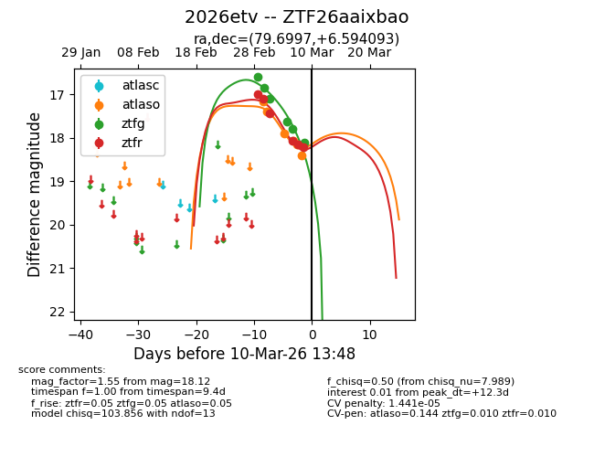
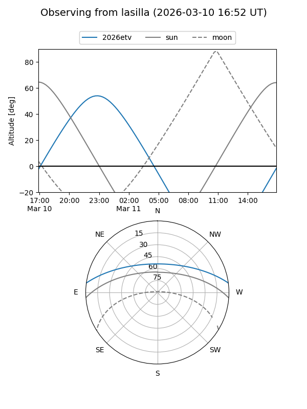
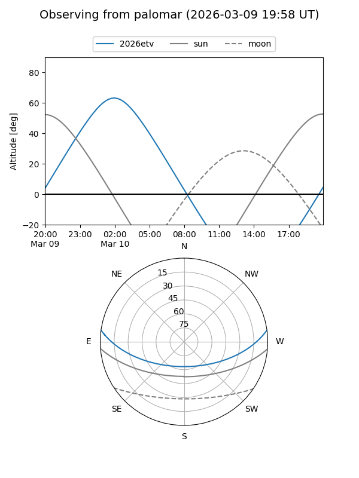
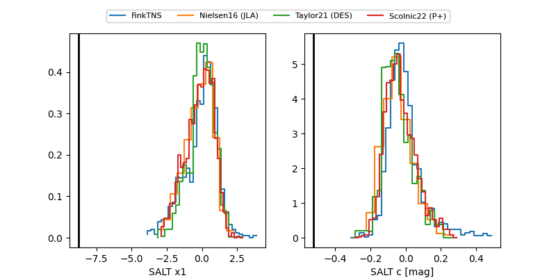

2026etv
Target 2026etv at 2026-03-10 13:49
Aliases and brokers:
FINK: link
Lasair: link
ALeRCE: link
TNS: link
YSE: link
alt names
ZTF26aaixbao (ztf,fink_ztf)
2026etv (tns,yse)
Coordinates:
equatorial (ra, dec) = 79.6997,+6.59409
equatorial (HMS+DMS) = 05:18:47.93,+06:35:38.73
galactic (l, b) = (195.8677,-17.17857)
Flags:
likely cv
Photometry:
last atlaso=18.41, ztfg=18.12, ztfr=18.21
6 atlaso, 6 ztfg, 6 ztfr detections
Lightcurve

Visibility


Additional plots
